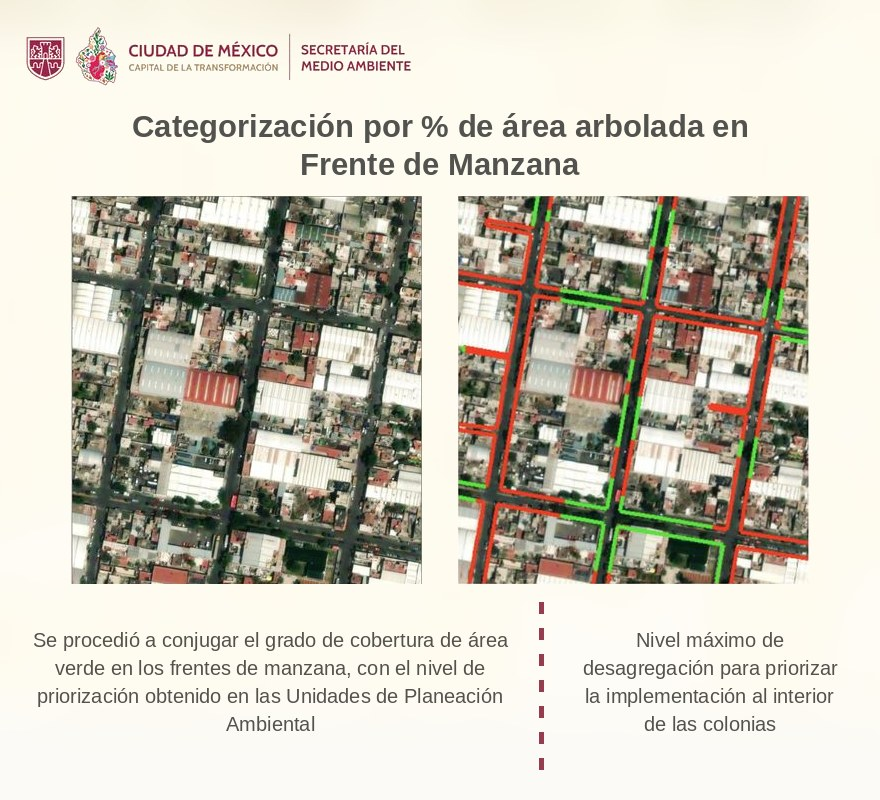

Colonias y Calles se combinan; Alcaldías va sola.
La prioridad indica dónde conviene plantar primero para que el arbolado llegue a donde más falta hace: las colonias con más calor, mayor rezago social y menos sombra, y dentro de ellas, las calles que hoy tienen menos vegetación. El modelo se construyó en dos pasos, de la colonia a la calle.
Cada zona de la ciudad se evaluó con tres criterios técnicos. Cada criterio se clasificó en cinco clases, donde 1 significa menor necesidad de arbolado y 5 la mayor:
| Criterio | Fuente | Clase 1 (menor necesidad) | Clase 5 (mayor necesidad) |
|---|---|---|---|
| Calor: temperatura de la superficie urbana (isla de calor) | SEDEMA, 2024 | Menos de 28.8 °C | Más de 43.1 °C |
| Rezago social: grado de marginación | CONAPO, 2020 | Muy bajo | Muy alto |
| Sombra: superficie cubierta por copas de árboles | SEDEMA | 55.6 % a 100 % de la zona | 0 % a 12.6 % de la zona |
La suma de las tres clases define la prioridad de la colonia en cinco niveles, de Muy Alta a Muy Baja. Es el dato que aparece al seleccionar una colonia y en la ficha de cada calle.
El contexto social que reporta el programa —el que se muestra en la caja de la colonia, en las fichas y en los archivos descargables— es el Índice de Desarrollo Social por unidad territorial de EVALÚA CDMX, instrumento oficial de focalización de la Ciudad, con su estrato y su población en pobreza por necesidades básicas insatisfechas. El modelo vigente clasificó el rezago social con el grado de marginación urbana CONAPO 2020, como indica la tabla; la actualización del modelo para clasificarlo con el Índice de Desarrollo Social está en proceso.
Un frente de manzana es el tramo de calle que da a un lado de una manzana. Para cada uno de los 372,534 frentes de la ciudad (INEGI, 2020) se midió cuánta vegetación tiene hoy a partir de imágenes satelitales (índice de vegetación NDVI) y se clasificó en cinco clases: a menos vegetación en la calle, clase más alta.
La prioridad final del frente combina la prioridad de la colonia con el verdor de la propia calle. Así, una calle sin árboles en una colonia con calor y rezago queda en Muy Alta; una calle ya arbolada en una colonia fresca y con baja marginación queda en Muy Baja. Este es el nivel de detalle con el que se delimitaron las 20,000 manzanas a intervenir en el programa, y permite ordenar el trabajo calle por calle dentro de cada colonia.
Una calle no es una sola línea en el mapa: son varios tramos. Cada línea de color que se dibuja es un tramo independiente y tiene su propia prioridad, así que una misma avenida puede aparecer oscura en unas cuadras y clara en otras. Por eso, al buscar una calle por su nombre, la herramienta resalta y suma todos sus tramos: los kilómetros que reporta son la suma de esos tramos, no la longitud de un solo trazo.

Las vialidades primarias y de acceso controlado (ejes viales, calzadas, Circuito Interior, Periférico, Viaducto y avenidas principales) corresponden al Gobierno de la Ciudad de México; el resto de la red la atienden las alcaldías. La capa de vialidades primarias (— km) trae su propia prioridad de reforestación en la misma escala de cinco niveles: — km son prioritarios (—).
Para no contar dos veces la misma calle, los frentes de manzana que dan a una vialidad primaria se asignan al Gobierno Central y se excluyen de las cifras, listados y fichas de las alcaldías: son — frentes (— km). Un frente se considera sobre la vialidad primaria cuando corre paralelo a ella (diferencia de rumbo de 30° o menos) y está a 18 m o menos de su eje, o hasta 60 m cuando además coincide el nombre de la calle. El — de los kilómetros de vialidad primaria tiene frentes asociados; el resto son tramos sin manzanas al frente (vías de acceso controlado, puentes y entronques). La meta del Gobierno de la Ciudad se mide sobre la red primaria completa —los — km—, no sobre el subconjunto con frentes.
Por eso el panel separa dos consultas. La primera, Atribución, define de quién es la calle: con Alcaldías se consultan los frentes que planta cada demarcación; con Gobierno Central, las vialidades primarias con su prioridad, su buscador de avenida y sus descargas; ambas casillas pueden estar activas para ver las dos redes juntas. La segunda, Modelo de priorización, define el territorio y el detalle con que se consulta ese universo: alcaldía, colonia o avenida, y si el mapa dibuja alcaldías, colonias o calles. Las cifras, los listados, las fichas y los archivos descargables siempre corresponden a la combinación elegida en ambas.
Nada de esto es una atribución nueva. El reparto que ordena la herramienta ya está en la ley: la Ley Orgánica de Alcaldías encomienda a las demarcaciones los programas de reforestación en las vías secundarias, de modo que las vialidades primarias y de acceso controlado quedan fuera de ese ámbito y corresponden al Gobierno de la Ciudad.
Cabildo (Constitución, art. 54): órgano de planeación, coordinación, acuerdo y decisión entre el Gobierno de la Ciudad y las Alcaldías; garantiza el cumplimiento de sus acuerdos.
Fuentes: INEGI, Características del Entorno Urbano 2020 (frentes de manzana); CONAPO, Índice de marginación urbana 2020; EVALÚA CDMX, Índice de Desarrollo Social por unidad territorial (población, población en pobreza por necesidades básicas insatisfechas y estrato de desarrollo social); SEDEMA, temperatura superficial urbana 2024 y cobertura de copa; Sistema de Información Ambiental, modelo de priorización de frentes de manzana (nov. 2025); SEDEMA, capa de vialidades primarias priorizadas para reforestación (ago. 2026).